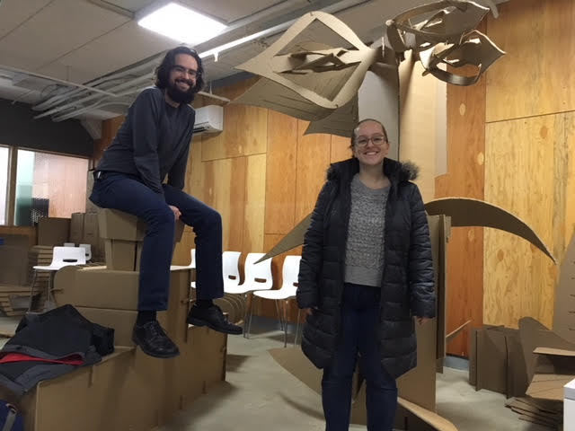

##[Home](../index.html) | [Portfolio](../index.html#portfolio)
---
<!--Slideshow-->
<div class="w3-content" >
<div class="w3-display-container mySlides">
<img src="images/cardboard07.jpg" style="width:100%">
<div class="w3-display-bottomleft w3-large w3-container w3-padding-16 w3-black">
The Lounge @ Toby Plaza
</div>
</div>
<div class="w3-display-container mySlides">
<div class="w3-display-bottomleft w3-large w3-container w3-padding-16 w3-black">
Clair testing the Banana Chair
</div>
</div>
<div class="w3-display-container mySlides">
<img src="images/cardboard09.jpg" style="width:100%">
<div class="w3-display-bottomleft w3-large w3-container w3-padding-16 w3-black">
Tea Party with Shaksham!
</div>
</div>
<div class="w3-display-container mySlides">

<div class="w3-display-bottomleft w3-large w3-container w3-padding-16 w3-black">
Lounging with Ray and Kate
</div>
</div>
<div class="w3-display-container mySlides">
<img src="images/cardboard08.jpg" style="height:100%">
<div class="w3-display-bottomleft w3-large w3-container w3-padding-16 w3-black">
Ian enjoying his simple chair
</div>
</div>
</div>
<button class="w3-button w3-display-left w3-black" onclick="plusDivs(-1)">&#10094;</button>
<button class="w3-button w3-display-right w3-black" onclick="plusDivs(1)">&#10095;</button>
# <strike>Cardboard</strike>&nbsp;Corrugated Furniture Lounge
**"Oh cool, cardboard furniture!"**

Probably my biggest takeaway from this project is that the material used in cardboard boxes is not cardboard, but corrugated fiberboard. Turns out the industry definition of cardboard is sheet thin paper boards, like the material used in cereal boxes. The wavy fluted paper sandwiched between two flat sheets of paper board that we use in packaging is corrugated fiberboard. However, for the sake of brevity, I'll refer to the material used as cardboard.
**"Wait how did you get cardb-, sorry, _corrugated fiberboard_ to support the weight of a human being?"**
So while an individual layer of corrugated fiberboard may be weak on its own, there are several techniques to making it strong enough to support a person.&nbsp;
1. **Material:**&nbsp;You can get corrugated fiberboard in different flute sizes, amount of layers, and paperboard thicknesses. The combination of these factors allow us to play with the strength and flexibility of the boards. However, there is a certain threshold where strength increases costs us
flexibility in the material.&nbsp;
2. **Layers:**&nbsp;When designing cardboard furniture, adding more layers to the design strengthens the overall design.
3. **Distribution of Weight:** This is arguably the most important design factor of this project. If you were to put force on a single of cardboard, the board would most likely collapse. However if you were to assemble the piece in a interlocked grid, the weight would distribute in multiple directions thus increasing rigidity and reducing the chance for buckling. There are multiple ways of achieving this including but limited to: incorporating folds into the design, using a interlocking grid design, and adding internal ribbing to the design.&nbsp;
## The Project&nbsp;
In early 2018, my boss at my university makerspace was approached by the Putnam Art Committee to create a recycled corrugated furniture lounge as a companion piece to the _Judy's Hand_ statue that was being unveiled [at Toby Plaza for the 2018 Cleveland Triennial Art Festival.](https://thedaily.case.edu/judys-hand-pavilion-arrives-tobys-plaza-part-citywide-contemporary-art-exhibition/)&nbsp;I was recruited along with several other students from CWRU and the Cleveland Institute of Art (CIA).&nbsp;
The team was organized by proposal with 1-2 team members per proposal. We spent about 3 months prototyping, designing, and fabricating the design prototypes. In May, the proposals were presented to the Putnam committee who then chose the final design. Afterwards, the team fabricated about 30 furniture pieces for the lounge.&nbsp;
## Design Proposals&nbsp;
These are the proposals we submitted to the committee:
**1. Basic Chair**

**2. Flower Pots&nbsp;**

**3. Grid Chair - my design!**

**4. Banana Chair**

**5. Shade Tree**

**6. T Shape**

**7. L Shape**

## Final Product
The committee ultimately chose the **Flower Pot** chair and table design as it was rugged and aesthetically pleasing, and that it provided seating and eating surfaces as well as decor. The Corrugated Furniture Lounge debut during the installation of the _Judy's Hand_ statue in July and remained there for the rest of the festival.&nbsp;
A special thanks to my teammates Ian Charnas, Claire Barratt, Matthew Canel, Andrew Dupuis, Kate Hart, Raymond Krajci, Ryan Laganson, and Yanzhou Wang
---
##[Home](../index.html) | [Portfolio List](../index.html#portfolio)
&copy; Jerray Dewa. All rights reserved.